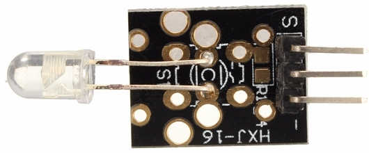
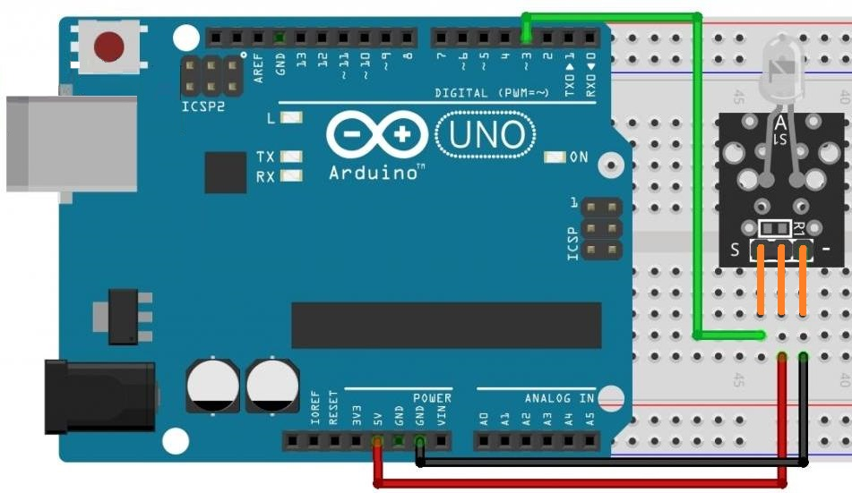

Модуль инфракрасного излучения KY-005
Модуль KY-005 имеет инфракрасный излучающий светодиод и можно использовать для передачи команд на инфракрасный приемник (ИК-приемник), например, на модуль KY-022. Не смотря на то, что инфракрасный луч не виден глазу, увидеть работут данного модуля можно используя обычную камеру телефона.
Модуль инфракрасного передатчика KY-005 состоит из 5-миллиметрового ИК-светодиода.
Технические характеристики модуля KY-005:
- Рабочее напряжение — 5 В.
- Прямой ток — 30...60 мА.
- Потребляемая мощность — 90 мВт.
- Рабочая температура от -25°С...80°C.
- Размеры (мм) — 18,5 x 15.

Для обеспечения тока 15 мА при питании светодиода напряжением 5 В последовательно с ним следует установить резистор 240 Ом. На плате предусмотрены контакты для монтажа резистора. В зависимости от выбранной линии управления светодиодом – питание модуля или линия сигнала резистор устанавливается на том или ином посадочном месте платы.
Назначение выводов представлено в таблице 1.
Таблица 1
| Контакт | Назначение |
|---|---|
| S | Выход данных |
| + | +5В |
| — | Общий (GND) |

Для работы с модулем KY-005 используется библиотека IRremote.